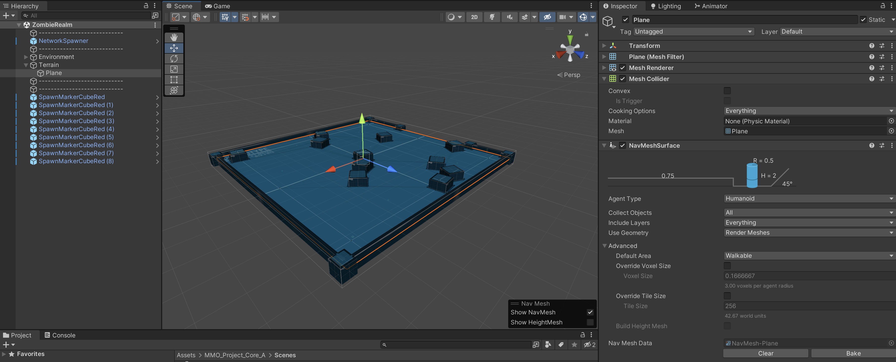

This AddOn allows you to break the single scene limitation of
uMMORPG3d by implementing "Additive Scenes". The Additive Scene system allows you to
Split your world into several smaller scenes. Your world is still
Represented by your main scene and everything still takes place inside
A single scene, but that scene can be broken down into several smaller
Scenes that are loaded/unloaded on the fly. This reduces overhead, scene
Size, navmesh size, number of assets and number of network identities
(like monsters And npcs) present in the main scene. It also makes editing
scenes much Easier because you can work with smaller scenes.
This asset only loads the scenes into client and server memory that contain
A player. All other scenes remain unloaded. For example if your world is
Made from 24 scenes and you only have 3 players online in 3 different parts
Of your world, just 3 (out of 24) scenes will be loaded into memory.
This AddOn is free, Donations are welcome (5$) using PayPal:
Please note this asset is still work in progress and it is by far not
a multiserver or instancing solution. This asset is the result of my
own game development work and allows for multiple scenes with reduced
overhead in the quickest and easiest manner. This AddOn does not require a
complicated multiserver setup and works in Host+Play as well as in Dedicated mode.
Support
Bug reports via Discord are welcome but being a free asset, I cannot provide any support - thank you for understanding.
Requirements
- A copy of the uMMORPG3d Remastered asset
- Might work with Classic, uMMORPG2d and uSurvival as well
- For 2d you simply have to change the Trigger Area to 2d
- works with the latest version of Remastered and older Versions
- No core changes or other requirements
Installation
Quite a bit of setup is required, but once done you're ready to create
a (almost) infinite world:
· Drag-and-drop the file in "Components [Attach to all Player Prefabs]"
To each one of your player prefabs in order to add it to that player.
· Drag-and-drop the file "Components [Attach to Network Manager]" to
The network manager in your main scene. We edit the settings a bit later.
Image: Additive Scene Manager Component attached to Network Manager
· Create one or more new scenes from scratch, do not duplicate the
Main scene that ships with uMMORPG (because it contains objects that cause errors), just create
one or more empty ones. Those new scenes are referred to as "Additive Scenes". Also
keep your main scene around (the one that holds the Network Manager, the Canvas and others).
Image: Project scenes folder with several scenes in it.
· Decorate Your Additive Scenes any way you want and attach a
"Navmesh Surface Component" to all Terrain and/or walkable mesh and bake the
navmesh (make sure NOT to have A Network Manager, Event System, Main Camera or
Canvas in the additive scenes).

Image: Example additive scene hierarchy, Navmesh Component and baked navmesh.
· Go back to your main Scene and add all your Additive Scenes to it by
Drag-and-dropping it into the hierarchy (we will remove them later again). Move
The Additive scenes position where you want them to be and save each scene. Terrains and/or
Planes should touch the main scene or each other to make walking across them possible
(See Screenshot 4).
Image: Main scene with additive scenes added and positioned.
· Back in your main scene, place one "Additive Scene Trigger" from the add-on folder
"Prefabs [Add to MainScene]" so that it covers the sub scene at this position. Make
sure the Trigger is part of the main scene hierarchy and NOT part of the additive scene.
Make the Trigger about 1.5 times bigger than the additive scene it covers, so that it
Extends its additive scene in every direction, triggers may also overlap each other
When a player enters the Additive Scene trigger, the corresponding scene is loaded. When
the last Player inside the trigger area leaves, the scene is unloaded again. Make sure the
trigger area is big enough so, whenever a player enters the additive scene terrain, that
player will always enter the trigger as well. The trigger must be triggered when a player enters
or leaves the additive scene.
Image: Main scene with additive triggers in hierarchy and positioned over additive scene locations.
· Select each Trigger and drag the corresponding Additive Scene from your project to
the inspector. Repeat for each Additive Scene. You should now have
a trigger for Each Additive Scene with the Scene Object assigned to it and the Trigger
should be Located at the position of the Additive Scene, covering it.
Image: Selected trigger with additive scene assigned to its inspector.
· In your Main Scene, select the Network Manager and enter all data in the "Additive
Scene Manager" component we attached to it earlier. You add a entry for every Additive Scene
and Link the corresponding Additive Scene object from your project (usually in the Scenes folder)
as well as Additive Trigger object (that resides in your Main Scene hierarchy).
(See Screenshot 1 again)
· Remove all Additive Scenes from the Main Scene again (don't forget to save
them) by right clicking and selecting "Remove" from the context menu. Now just the Main Scene
content (including Network Manager, Canvas And so on) remains together with all
Additive Scene Triggers.
Image: The final main scene with all the usual objects plus freshly setup trigger colliders.
· Now, select your Network Manager in the Main Scene and add three Events
to it. If you forget to do that, the asset will work at first but
Errors will happen as soon as another player enters the world.
You do this by clicking the "+" symbol on each of the required event slots first. Then select "Runtime Only" and drop the
Network Manager component into the inspector slot. Finally open the select menu on the
Right side and select the "Additive Scene Manager" and the corresponding function. The
Three functions to assign are:
Image: Add three events and set the functions to execute.
· Finally, Go to your projects "Build Settings" and make sure you added your Main
Scene as well as all Additive Scenes created previously to it (see Screenshot 9).
Image: All scenes added to build settings
If everything is setup correctly, you are now ready to test your game. This setup will
Work both in Host+Play, as well as in Dedicated mode.
Tips
· Don't hesitate to separate your main scene into several smaller additive scenes, a
Terrain size of something between 512 by 512 and 1024 by 1024 is recommended, so it makes
Sense to base your scene size around that.
· You can align your scenes and scene triggers in a grid type manner, but you do not
Have to do. Its all up to you and how you setup your triggers and scenes and align
Them to each other.
· For positioning, add your additive scenes to the main scene. Then adjust their position
And save them, removing them afterwards again. For editing, its a good idea to open
The additive scene itself and then edit it (also you can edit them as part of the
Main scene as well).
· You always require your main scene, do not remove it. Furthermore, your players
should start in your main scene and the main scene will always be loaded. Do not
try to unload the main scene by adding it to a additive scene trigger. Its a good idea to
use your main scene for the character creation, selection and as a starting area for your
players.
· Make sure you have a Navmesh component on each additive scene terrain/mesh as well
as colliders. Also do not forget to bake the navmesh of each additive Scene individually.
Otherwise you will encounter errors like not being able to move from one scene to another
or players falling through the terrain/mesh.
· Also make sure your spawnpoints, respawn points and teleporter destinations are
correctly setup. Otherwise you will encounter errors like players falling through terrain.
Limitations
Being a free and work in progress asset, there are currently a few limitations:
· You always require the main scene and this scene will always be loaded, there is
No way around. You cannot unload the main scene and do NOT try to add the main scene
To your Additive Scene Manager and do NOT create a trigger for it.
· Pets and Monsters cannot cross scene borders yet, as they are not able to
traverse across unconnected navmeshes. You can try to connect your navmeshes by
adding navmesh links to them, but this solution is suboptimal. For pets this is not
A big issue, because they will be teleported to their owner anyway. If your scenes are big
enough, it might not be an issue with monsters as well as they simply won't follow players from
one scene to another.
· Depending on the number of players there will always be a certain number of scenes
Loaded, the bigger your world is and the more distributed your players are around
The world, the more scenes will be loaded at the same time.
· The network visibility range (set in Spatial Hashing Interest Management in Network
Manager) has to be way smaller than the size of the Additive Scene Triggers. Otherwise,
Players and Monsters are loaded but the scene is not, which results in errors. As a rule
Of thumb: your Network Visibility Range should be less than half the size or your
Additive Scene Triggers.
· You won't be able to "look" into another scene from the distance, when that scene is
Not loaded. It is therefore recommended not to make your scenes too small.
About the Author
This unity asset was written by Fhiz, the original author of almost
200 AddOns for uMMORPG3d Classic. I still enjoy using Unity3d but
Focus on my game now instead of writing AddOns. This AddOn is the result
of my recent development process that I wanted to share with the uMMORPG community.